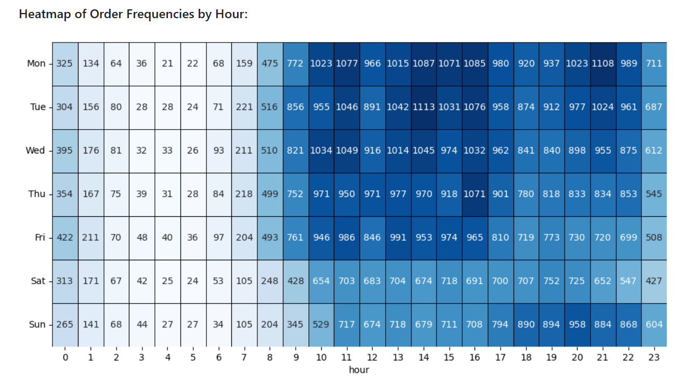
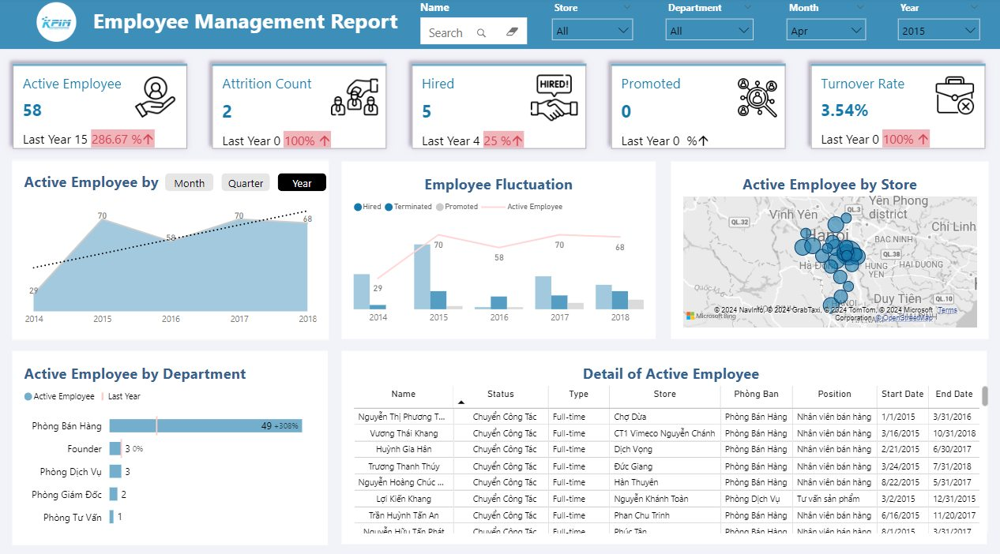
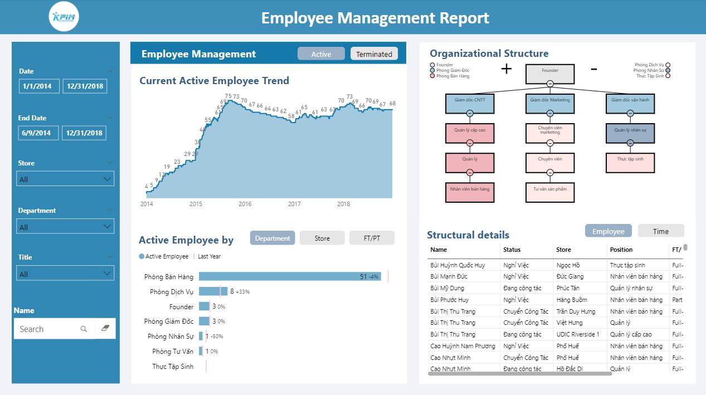
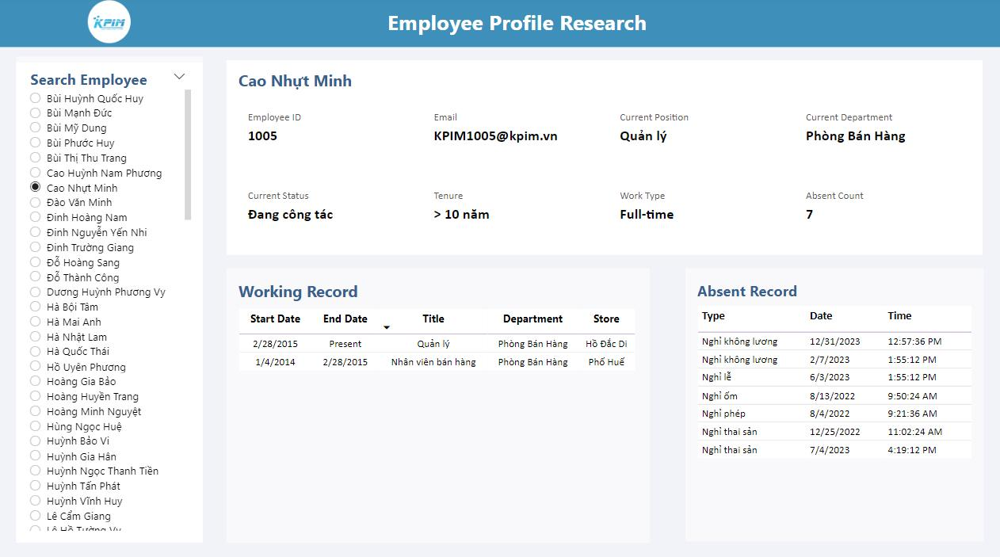

Olist is an e-commerce site in Brazil that provides a better platform to connect merchants and their products to the main marketplace in Brazil.
It provides good services for the merchants to sell their products through the Olist Store and ship them directly to the customers using Olist logistic partners.
The dataset used in this project includes information from 100,000 orders made between 2016 and 2018 in multiple marketplaces across Brazil, providing
a multi-dimensional view of orders, covering aspects such as order status, price, payment, freight performance, customer location, product attributes, and customer reviews.
Additionally, a geo-location dataset mapping Brazilian zip codes to latitude/longitude coordinates is available.
In this project, I use Python to load, clean, and analyze the data to propose three key strategies for Olist's revenue growth this year, including:
(1): Increase Customers (Acquiring New Customers and Retaining Existing Customers), (2): Increase Order Frequency (Peak order period and RFM customer segmentation), and (3): Increase Order Size (Average order size and Which products are often bought together?).




For this project, I utilized Excel, Power Query, and Power Pivot to extract, clean, and filter data from the database, ensuring the creation of accurate data that provided valuable insights for assessing Human Resource Management in KPIM Companies.
In the report, I used Power BI and wrote advanced DAX formulas to track key metrics such as the current number of employees, new hires, promotions, resignations, and the company's turnover rate. Additionally, the report enabled the evaluation of HR trends over time (monthly, quarterly, yearly), as well as by geographic location, job position, and department.
.png)
TheLook is an e-commerce platform specializing in clothing. The dataset includes information on customers, products, orders, logistics, web events, and digital marketing campaigns.
In this project, I applied advanced SQL techniques, including subqueries, Common Table Expressions (CTEs), and window functions, to process and analyze TheLook's e-commerce data.
I developed and maintained datasets to track key performance indicators such as monthly order volume, customer acquisition, average order value, and product profitability.
Additionally, I conducted cohort analysis and created visualizations to examine customer segments, retention trends, and churn patterns over time.
These insights provided a deeper understanding of customer demographics and purchasing behavior.